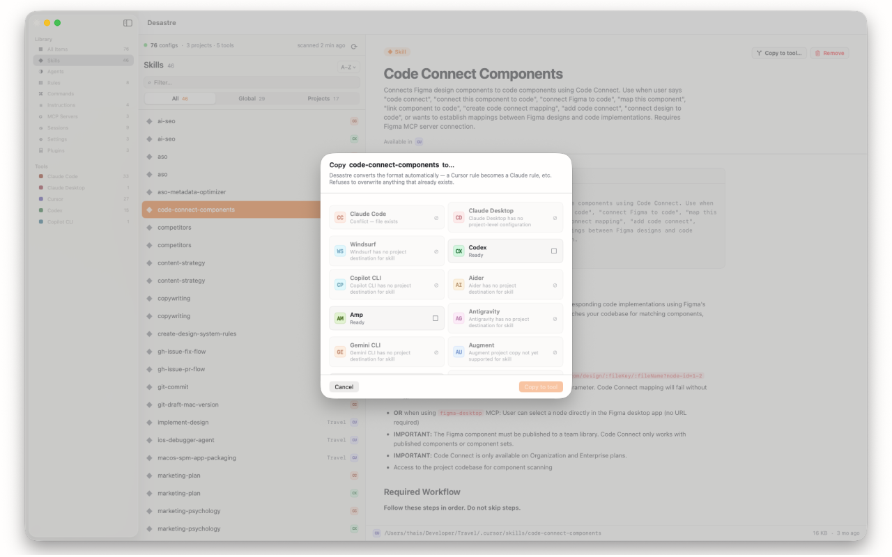

How to convert Cursor rules to Claude Code
globs, alwaysApply) and an .mdc extension. To convert one for Claude Code: strip those two frontmatter fields, change the extension to .md, and either merge the content into CLAUDE.md or save it as a skill. Or skip the manual work — Desastre does the conversion in one click.
Why the formats don't match
Both tools speak Markdown, but they disagree on everything around it:
| Cursor | Claude Code | |
|---|---|---|
| File extension | .mdc | .md |
| Global location | ~/.cursor/rules/ | ~/.claude/CLAUDE.md or ~/.claude/skills/ |
| Project location | .cursor/rules/ | CLAUDE.md or .claude/skills/ |
| Scoping | globs frontmatter per rule | No glob scoping — instructions are always-on, skills load on demand |
| Always-on switch | alwaysApply: true | Anything in CLAUDE.md is always on |
So "conversion" is really a routing decision: an alwaysApply rule belongs in CLAUDE.md; a descriptive, situational rule maps naturally to a Claude Code skill with its description intact.
Converting by hand
- Open the
.mdcfile and delete theglobsandalwaysApplylines from the frontmatter. Keepnameanddescription. - If the rule was
alwaysApply: true, paste the body into your project'sCLAUDE.md(or~/.claude/CLAUDE.mdfor global rules). - Otherwise, save it as
.claude/skills/<rule-name>/SKILL.mdso Claude Code loads it when the description matches the task. - Repeat for every rule, in every repo, without overwriting anything that's already there.
Step 4 is where this stops being a five-minute job. There are CLI tools (rule-porter, rulesync) that batch-convert a single repo, but they assume you remember which repos have rules worth converting in the first place.
Converting in one click with Desastre
Desastre handles both the finding and the converting:
- Scan. Desastre lists every Cursor rule on your machine — global and per-project, including repos you forgot about, even legacy
.cursorrulesfiles. - Pick. Preview any rule with its frontmatter rendered as a clean header.
- Copy. Hit "Copy to tool…", choose Claude Code, done. The
.mdcbecomes.md, Cursor-only frontmatter is stripped, and the file lands where Claude Code reads it. If a file already exists at the destination, Desastre flags the conflict and refuses to overwrite — it never destroys anything.

It works in the other direction too — Claude Code agents to Cursor, rules to Windsurf or Continue.dev — and the same one-click copy moves skills, agents, instructions and JSON-based MCP configs between 19 supported tools, always same-scope (global→global, project→project) so nothing leaks across repos.
Desastre — AI config manager for Mac
Find every rule you've written, then move it to any tool in one click. $1.99, one time — cheaper than the coffee you'd drink converting them by hand.
Download on the Mac App Store